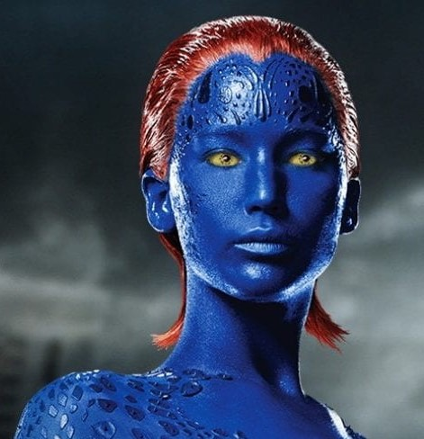

The beauty of Cosmetics
What is the role Makeup?
Makeup plays a huge role in the industry by giving women confidence when it comes to their physical appearance. Women who wear makeup have a meaning behind it and that is either improving our mood, boost self-esteem, and exhibit our personal style. The job as a makeup artist is to improve their skills by creating bright and bold face art. Many colleges and universities offer degree programs in cosmetology to prepare them for their new journey. FDA has regulated makeup along with along with food and over the counter medicine. The purpose is to cover up any blemishes, even out skin tones, give an enhanced feature. Even though makeup is used worldwide, there has been surveys from men and women stating their opinions on makeup. Some of the population feel as if makeup is not needed and that natural beauty is recommended, but overall makeup defines the beauty.
Special effects makeup
The fun of beauty
Special effects makeup has been a source of wonder and mystery since the dawn of film. It is often used to create characters and creatures that are so realistic they can seem almost unreal. But what is SFX makeup exactly? From creating iconic superheroes like Iron Man to bringing monsters like Godzilla to life, SFX makeup has made its mark in the entertainment industry. In addition to films, special effects makeup can also be used in theater productions, television shows and more. Special of effects runs under different types. We have prosthetics, airbrushing,specialized makeup, and also animatronics.The history of SFX makeup, or prosthetics, dates back to the early days when filmmakers would use flour and glycerin to create realistic-looking effects. As technology advanced, materials such as latex and foam rubber began to be used in combination with traditional methods in order to create increasingly complex effects. 